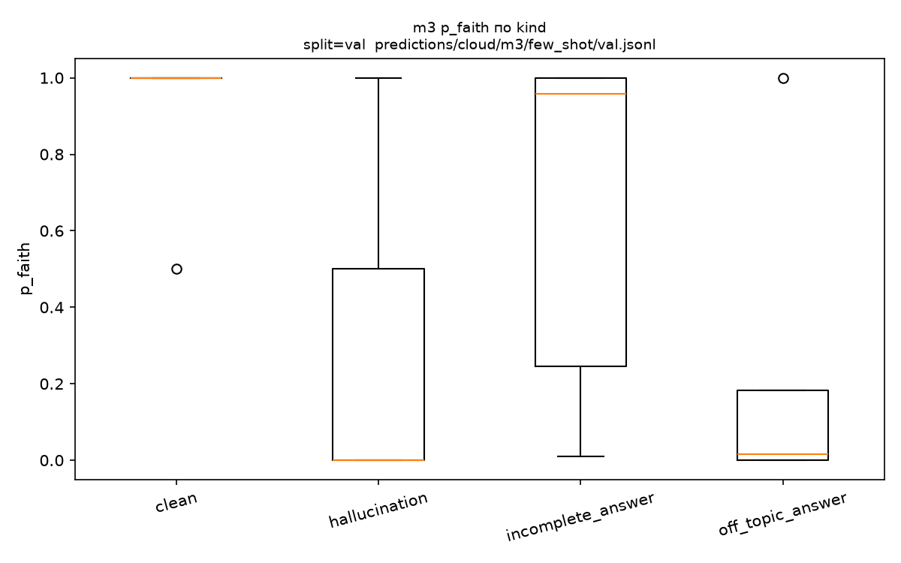
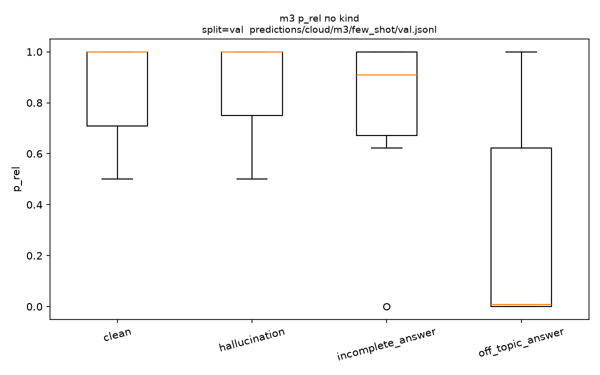
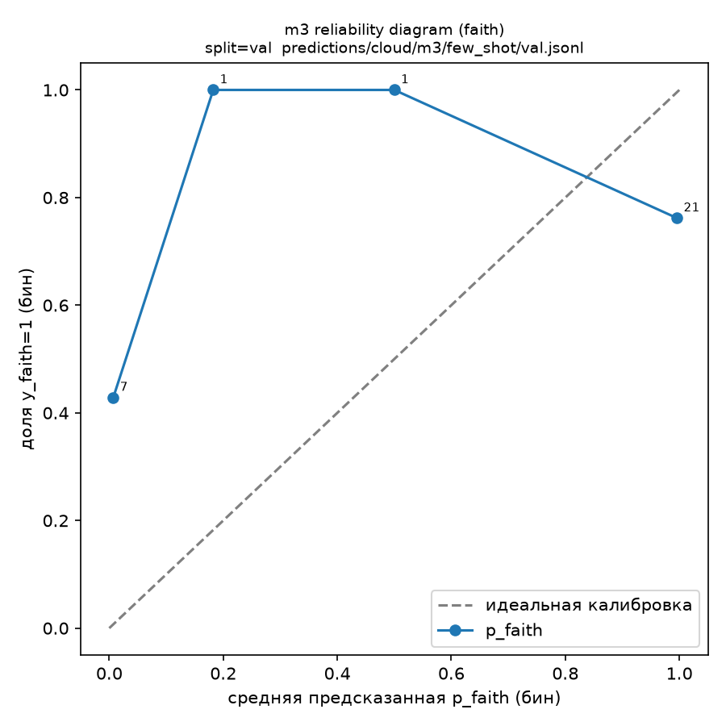
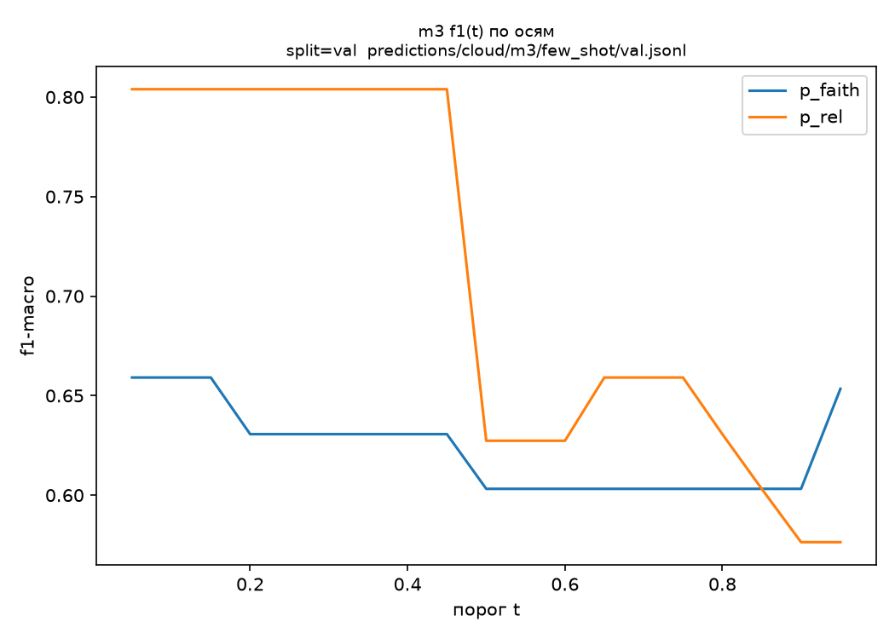
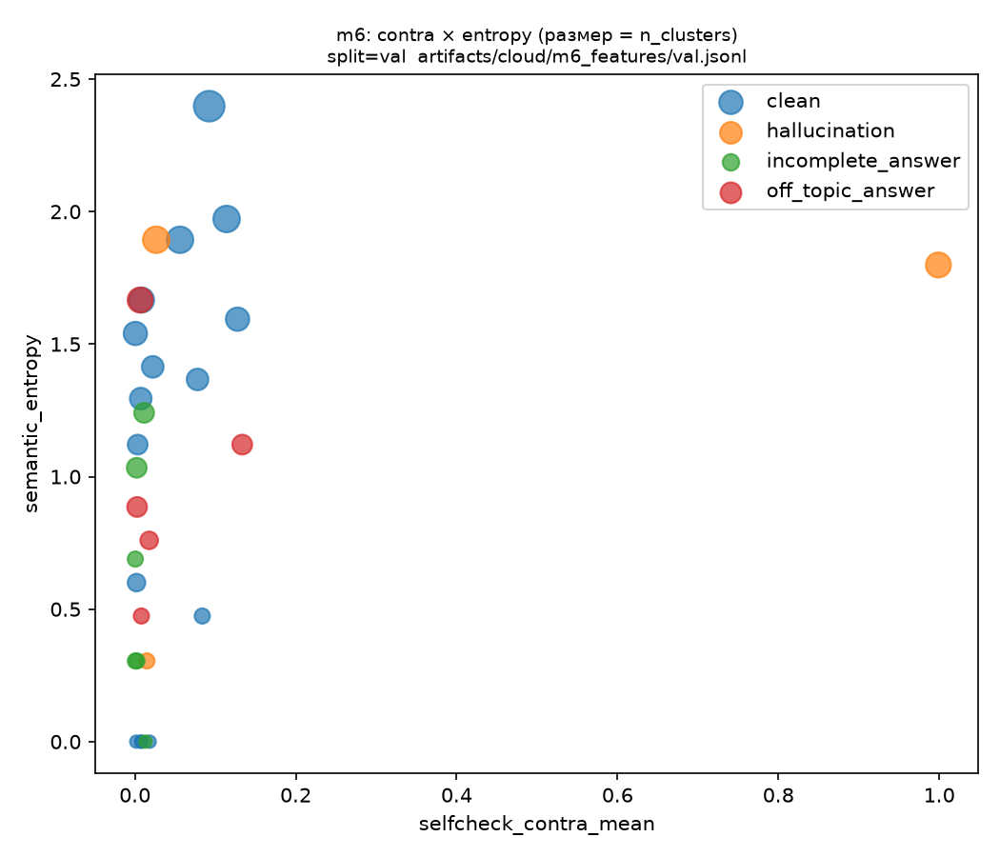

Методы 3 (LLM-as-judge + GEPA) и 6 (SelfCheck + entropy) · cloud-этапы −1 … −0.25 · SMILES × Alfa Bank
| вариант | val | test | gap val−test |
|---|---|---|---|
| few_shot | 0.824 | 0.691 | +0.132 |
| gepa_markers_s1 | 0.824 | 0.583 | +0.240 ⚠ |
| zero_shot | 0.792 | 0.661 | +0.131 |
| gepa_plain_s1 | 0.760 | 0.697 | +0.063 |
| gepa_markers_s0 | 0.729 | 0.764 | −0.036 |
| gepa_plain_s0 | 0.722 | 0.661 | +0.062 |
11 секций: боксплоты по kind, heatmap осей, калибровка, f1(t), confusion, GEPA-эволюция, m6. Открыть в отдельной вкладке ↗
| вариант | seed | лучший val-score | кандидатов | вызовы 7B | вызовы 72B | эволюция |
|---|---|---|---|---|---|---|
| markers | 0 | 0.717 | 8 | 596 | 20 | отчёт |
| markers | 1 | 0.733 | 5 | 501 | 21 | отчёт |
| plain | 0 | 0.717 | 11 | 501 | 20 | отчёт |
| plain | 1 | 0.733 | 7 | 501 | 25 | отчёт |
Диверг. шкала: синий — Δ>0 (ожидаемый сигнал), красный — инверсия; серый — около нуля. Знак немонотонен по N — энтропия ненадёжна, faith-сигнал m6 строится на contradiction.
| thr \ N | 3 | 5 | 10 |
|---|---|---|---|
| 0.30 | +0.229 | +0.065 | +0.441 |
| 0.40 | +0.416 | +0.017 | +0.343 |
| 0.50 | +0.335 | −0.064 | +0.249 |

p_faith по типам кейсов — off_topic низкий (ограничение 7B-судьи)
p_rel по типам кейсов — rel-сигнал разведён
Калибровочная диаграмма судьи (faith)
f1(t) по обеим осям
m6: contradiction × entropy (размер = n_clusters)Живой запуск: streamlit run scripts/explorer.py из репозитория.